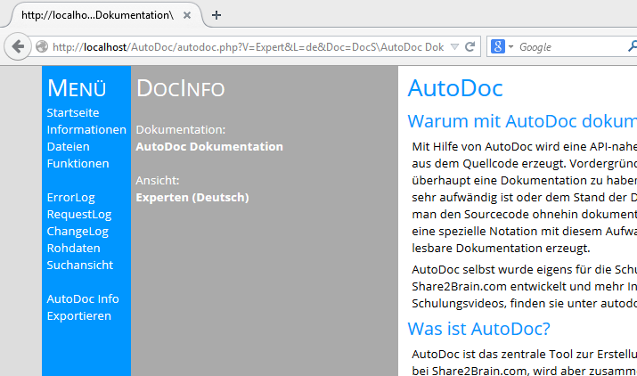

Doccen empfiehlt sich ganz besonders für API ähnliche Dokumentationen oder für Dokuemtationen, die sich an fachkundige Nutzer richtet. Es geht dabei in erster Linie um eine Verkürzung des Ablaufes von Wunsch über Änderung bis hin zur Dokumentation. Letztere wird meist vernachlässigt, ist aber für die darauf folgenden Anpassungen maßgeblich. Deren Aktualität ist entscheidend, wenn es um Änderungen oder Nutzungen geht.
Je stärker die Projekteergebnisse miteinander in einer Art Plattform verschmelzen und wiederverwendet werden, desto wichtiger wird die Eigenschaft, die Komponenten aktuell und nahtlos zu dokumentieren.